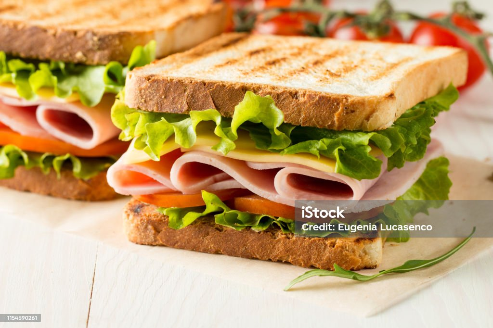

Sandwich

Description
This is a recipe for sandwiches. You know, stuff between bread.
The main highlight is that you take things that are delicious and layer them between two pieces of bread.
Ingredients
- Two slices of bread
- Some kind of lunch meat usually
- Your favorite kind of cheese
- Some sliced tomatoes and maybe some lettuce, whatever veggies you like really
- Maybe some condiments like mayo or mustard
Steps
- Place bread on counter
- Smear condiments on bread
- Put some lunch meat on the bread
- Layer some cheese slices on top of the lunch meat
- Add vegetables to taste